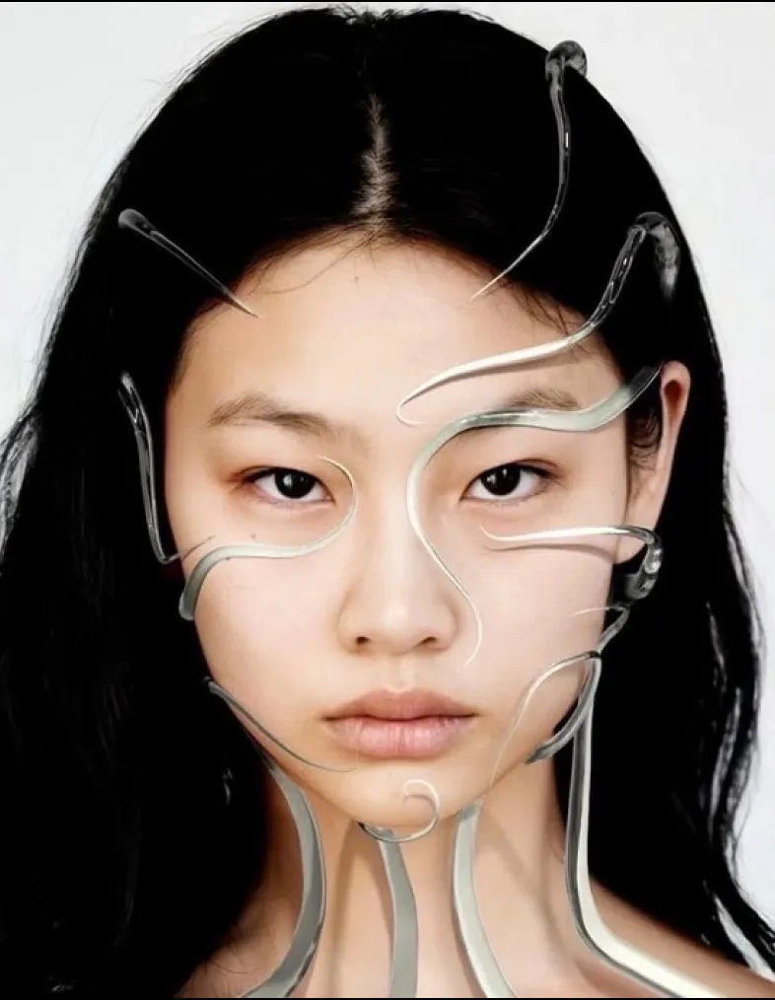

LE MAQUILLAGE, DÉJÀ DANS LE PASSÉ ?
Et si nous vous disions que les formes de maquillage utilisées aujourd’hui sont déjà archaïques. À l’ère du numérique, les innovations technologiques se multiplient, y compris dans le domaine du maquillage.
Si vous êtes de ceux qui souhaitent suivre ces innovations pour booster votre créativité, notre site est fait pour vous !
Découvrez toutes les nouvelles technologies dans le domaine du maquillage !
À LA UNE :
"FASHION" DE LADY GAGA : L'HYMNE VISIONNAIRE
La chanson Fashion de Lady Gaga a prédit l'ère du maquillage virtuel et des filtres AR, redéfinissant la beauté et l'expression de soi.